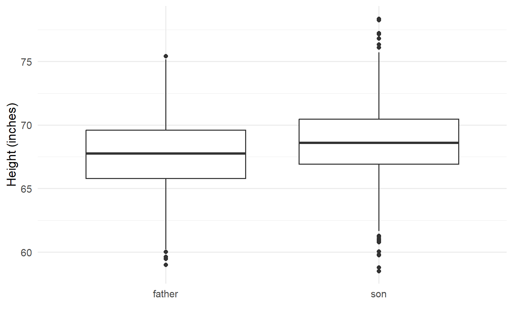
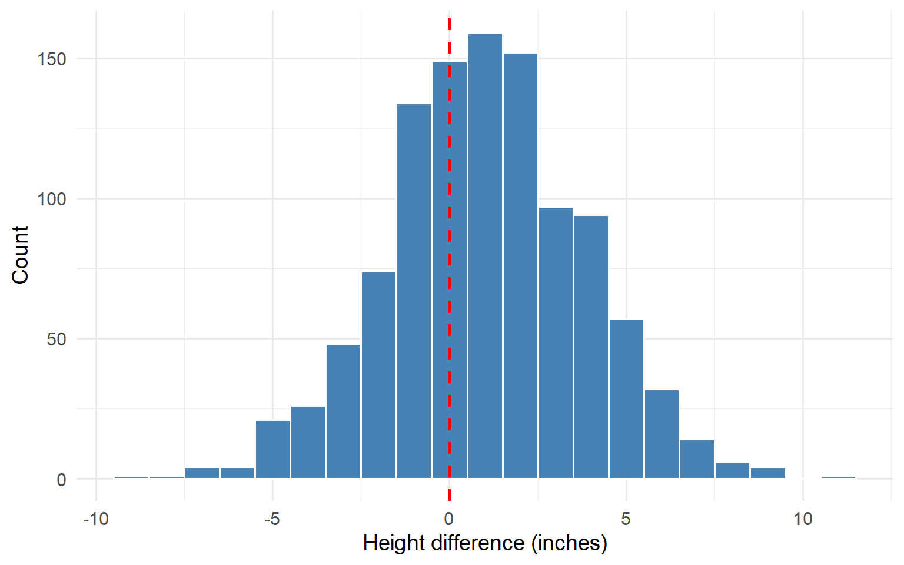

| Statistic | Value |
|---|---|
| Number of pairs | 1078 |
| Father mean height | 67.7 inches |
| Son mean height | 68.7 inches |
Exploratory Data Analysis
EDA for Machine Learning
Chapter 1
What is EDA?
Exploratory Data Analysis
John Tukey (1977): Statisticians had become too focused on formal inference at the expense of simply looking at data.
EDA is the corrective:
- Visualization
- Summary
- Iterative development of questions
EDA vs. Confirmatory Analysis
| Confirmatory | Exploratory |
|---|---|
| Begins with a hypothesis | Begins with data |
| Asks: do data support or refute? | Asks: what patterns are present? |
| Tests pre-specified claims | Generates new hypotheses |
A complete analysis typically involves both.
Why EDA Matters for ML
- Understanding data before modeling
- Variable types, distributions, missing values, outliers
- Generating hypotheses
- Patterns become candidates for formal modeling
- Diagnosing models
- Residual plots reveal what models miss
- Communicating findings
- Visualizations convey results to stakeholders
EDA is a Mindset
A willingness to look at data from multiple angles, to transform variables, to compare subgroups, and above all to ask questions.
Foundational Concepts
Data as Sample from Population
Population
The complete set of cases we care about
- All possible customers
- All manufacturing runs
- All images of a certain type
Sample
The subset we actually observe
- Our goal: learn about the population
- EDA helps assess whether the sample supports generalization
Central Value: Two Approaches
Mean (Average)
\[\bar{x} = \frac{1}{n} \sum_{i=1}^{n} x_i\]
- Minimizes sum of squared deviations
- Sensitive to outliers
Median
Middle value when sorted
- Half above, half below
- Robust to outliers
- Often better for skewed data
Dispersion: Two Approaches
Standard Deviation
\[s = \sqrt{\frac{1}{n-1} \sum_{i=1}^{n} (x_i - \bar{x})^2}\]
- Typical distance from mean
- Sensitive to outliers
Interquartile Range (IQR)
\[\text{IQR} = Q_3 - Q_1\]
- Spread of middle 50%
- Robust to outliers
Choosing Among Summaries
Key insight: Compute both and compare.
Large discrepancy between mean and median signals:
- Skewness, or
- Outliers
→ Warrants further investigation
Questions Drive the Analysis
Standard starting questions:
- What is the distribution of each variable?
- Are there outliers or unusual values?
- Are there missing values?
- How are pairs of variables related?
Domain-specific questions arise from context and purpose.
EDA Throughout Modeling
| Stage | EDA Role |
|---|---|
| Before | Understand distributions, detect quality issues |
| During | Compare models, identify difficult cases |
| After | Examine residuals, check assumptions |
Example: Father-Son Heights
Historical Context
Francis Galton (1885): Investigated whether height is hereditary
Karl Pearson: Founded first statistics department (UCL, 1911); collected father-son height data
This data set introduced:
- Correlation
- Regression
- “Regression to the mean”
The Data
First Look: Scatter Plot

Figure 1: Heights of father-son pairs
What the Scatter Plot Reveals
- Positive association: Taller fathers → taller sons
- Roughly linear relationship
- Substantial scatter around the trend
- Density in middle makes individual points hard to see
One visualization → one question answered, new questions raised
Conditional Distributions

Figure 2: Son’s height by father’s height interval
What the Box Plots Reveal
- Median increases with father’s height
- Spread (IQR) similar across groups
- A few outliers among sons of shorter fathers
This shows the conditional distribution of son’s height given father’s height.
→ Central concept in Chapter 2
Are Sons Taller Than Fathers?
Figure 3: Comparing height distributions
Summary: Fathers vs. Sons
| Generation | n | Mean | Median | SD |
|---|---|---|---|---|
| father | 1078 | 67.7 | 67.8 | 2.7 |
| son | 1078 | 68.7 | 68.6 | 2.8 |
Sons are about one inch taller on average.
Paired Differences
Figure 4: Distribution of son’s height minus father’s height
Regression to the Mean
Galton’s observation:
Extremely tall fathers tend to have sons who are tall, but not quite as extreme.
This is a statistical phenomenon, not a genetic one.
It arises whenever two variables are correlated but not perfectly so.
→ Explored mathematically in Chapter 2
The Practice of EDA
Showing Your Work
Throughout this book, code is generally hidden.
The Grammar of Graphics
- Start with data
- Specify aesthetic mappings (variables → visual properties)
- Add geometric objects (points, lines, bars)
- Customize labels and appearance
This framework (ggplot2) provides flexibility for constructing visualizations.
Class Exercises
Diamond Data (ggplot2::diamonds)
- ~54,000 diamonds with price and attributes
- Explore distributions, relationships, predictors of price
General Social Survey (forcats::gss_cat)
- US survey tracking social attitudes
- Practice with categorical variables
- Explore changes over time
Guiding Questions for Any Data Set
- How many observations? Variables?
- What are the variable types?
- What are the distributions?
- Are there missing values? Outliers?
- What relationships exist between variables?
- What would I need to know to make a decision?
Looking Ahead
Part 1: Foundations of EDA
| Chapter | Topic |
|---|---|
| 2 | Conditional Distributions |
| 3 | Clustering |
| 4 | Statistical Simulation |
| 5 | Sampling and Study Design |
| 6 | Information Theory |
Key Themes
- Conditional distributions underlie regression and classification
- Clustering exemplifies EDA in higher dimensions
- Simulation builds intuition about variability
- Study design determines what conclusions are valid
- Information theory provides vocabulary for ML
The EDA Mindset
Look at the data, ask questions, and let the data guide your understanding.
This mindset remains central throughout the book.
Summary
Key Takeaways
- EDA is question-driven exploration of data
- Central value and dispersion have multiple implementations
- Data = sample from population frames our inferences
- Multiple views of the same data reveal different patterns
- EDA continues throughout the modeling process
Exercises
Team Exercise 1: Response vs. Predictor
For the father-son height data:
- Which variable would you designate as the “response” and which as the “predictor”?
- Could a reasonable argument be made for the reverse?
- Describe a situation where this distinction would not apply.
Team Exercise 2: Regression to the Mean
Galton observed that extremely tall or short fathers tend to have sons who are not quite so extreme.
- Using the summary table of sons’ heights by father’s height, can you see evidence of this phenomenon?
- How would you quantify it?
- Why does this happen? (Hint: think about the role of the mother’s height and random variation.)
Team Exercise 3: Misleading Summaries
- Find or construct an example where summary statistics (mean, SD, correlation) give a misleading impression.
- What visualization would reveal the true structure?
- What does this imply about the order of operations in EDA?
Discussion Questions
A colleague says “I have 10 million rows—I don’t need to look at the data.” How would you respond?
When might prediction and understanding conflict? Give an example.
What would Tukey think about large language models doing data analysis?
Resources
- Tukey (1977): Exploratory Data Analysis
- Wickham et al.: R for Data Science (r4ds.hadley.nz)
- Wickham: ggplot2: Elegant Graphics for Data Analysis